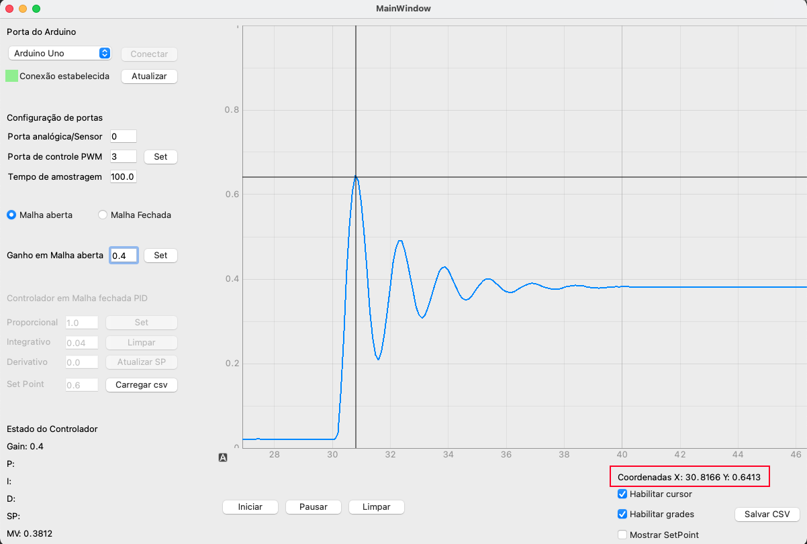
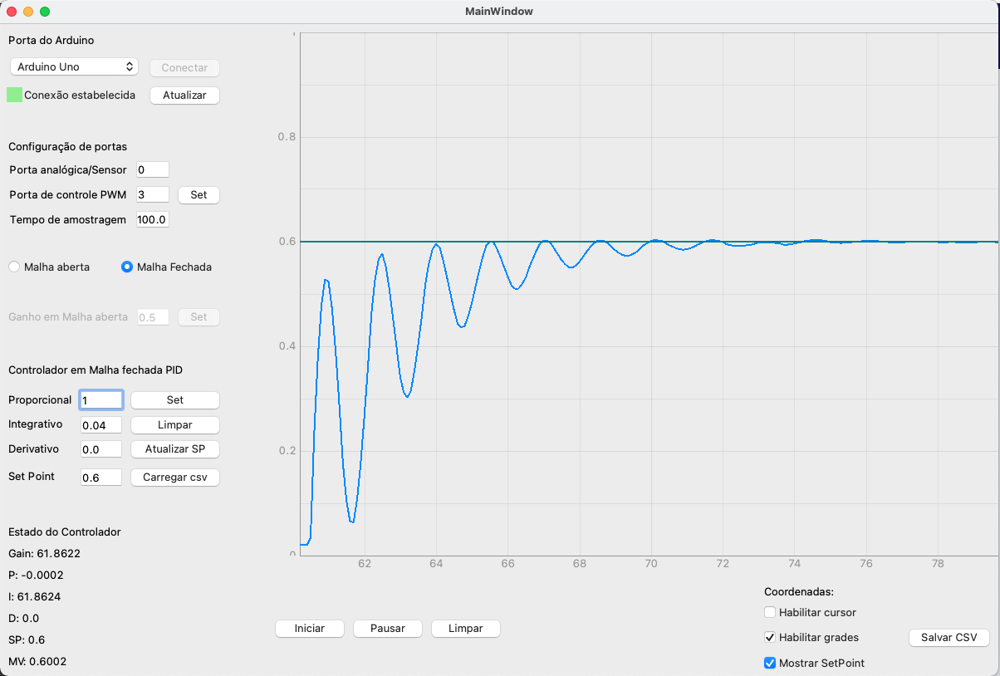

Recursos Disponíveis¶
O gráfico¶
O widget de gráfico do software utiliza a biblioteca Pyqtgraph, essa biblioteca permite que salve o gráfico como imagem, possibilita modificar a visão do gráfico em relação ao plot, permite também habilitar a grade do gráfico, pois bem, como fazer isso?
#salvar como imagem? Clique com o botão direito no gráfico e depois em export
#Modificar a visão do gráfico zoom/posição? Clique e arraste o mouse para modificar a posição em y ou x como desejado, e para mudar o zoom utilize o scroll do mouse.
#Habilitar o grid do grafico? Clique em “plot options” e depois em Grid, nessa opção tem-se a possibilidade de incluir as grades para y ou x.
O cursor¶
O cursor possibilita encontrar o valor para a posição desejada do plot, para habilitar o cursor, marque a caixa abaixo do gráfico no canto inferior direito, e para desabilitar desmarque-a.
O cursor pode ser muito útil para verificar fatores como sobressinal, detalhar tempo de acomodação, tempo de subida, dentre outros parâmetros que podem ser analisados graficamente.
Habilitar SetPoint¶
A checkbox de habilitar Setpoint cria uma linha horizontal no SetPoint configurado, para analisar a convergência da resposta analisada em relação ao SetPoint.
Salvar dados Captados em arquivo csv¶
Ao olhar o canto inferior direito do software o usuário encontrará um botão “Salvar csv” este botão salva os vetores de tempo e de resposta do sistema em um arquivo csv, para poder ser utilizado posteriormente em outros softwares ou no script disponibilizado na pasta útil para plot gráfico.
Carregar perfil de distúrbio¶
O software possibilita o usuário a incluir um distúrbio simulado na saída de seu sistema, para verificar a resposta que o controlador tem ao decorrer do distúrbio.
Para incluir esse distúrbio, basta criar o perfil dele conforme o desejado e salvar em csv, e para isso já esta disponibilizado um script em Python para a criação desse perfil de distúrbio (ver mais em recursos avançados). Em sequencia deve-se carregar o arquivo csv pelo botão carregar csv próximo ao controlador PID, e clicar em set novamente.